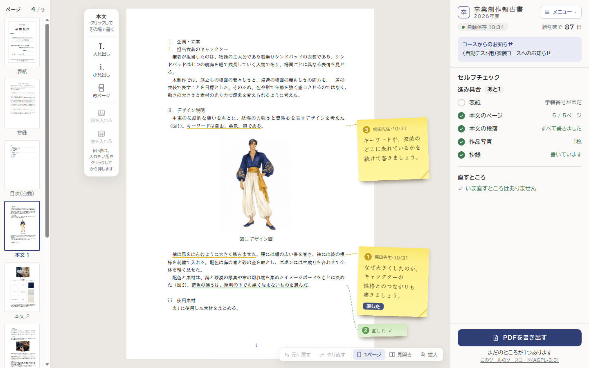
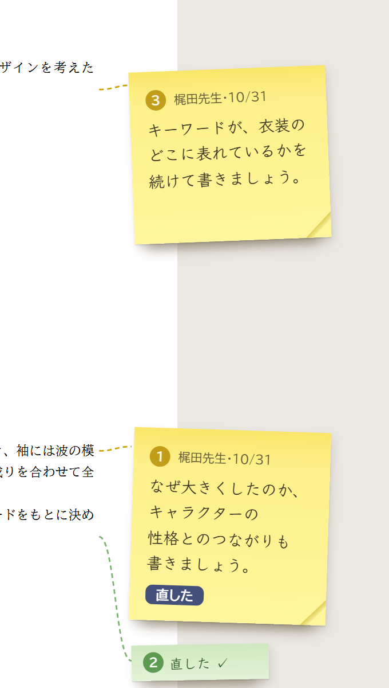
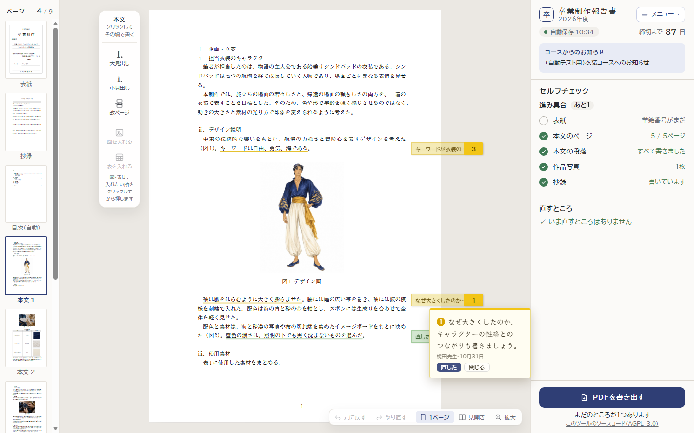
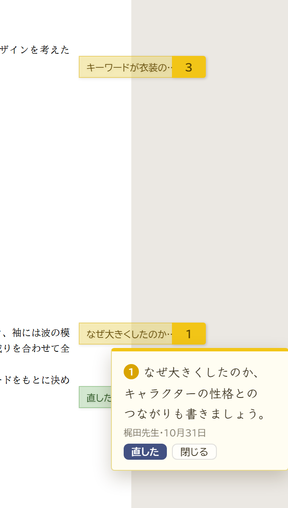
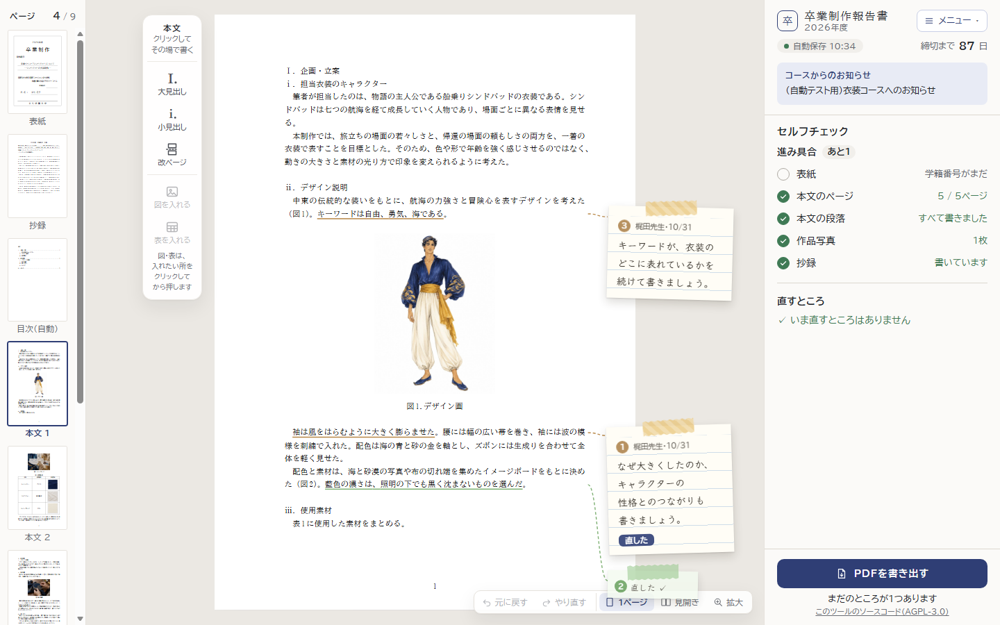
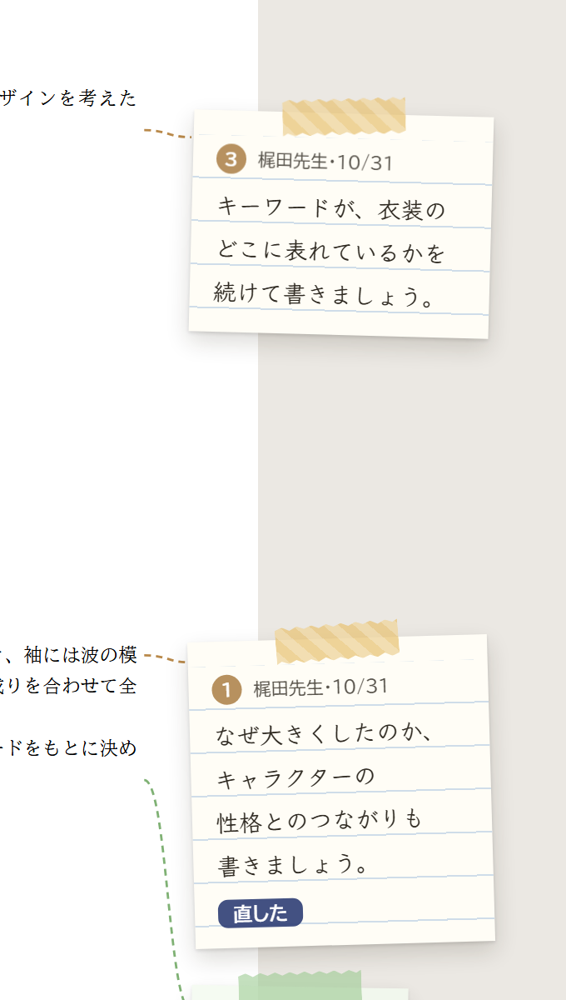
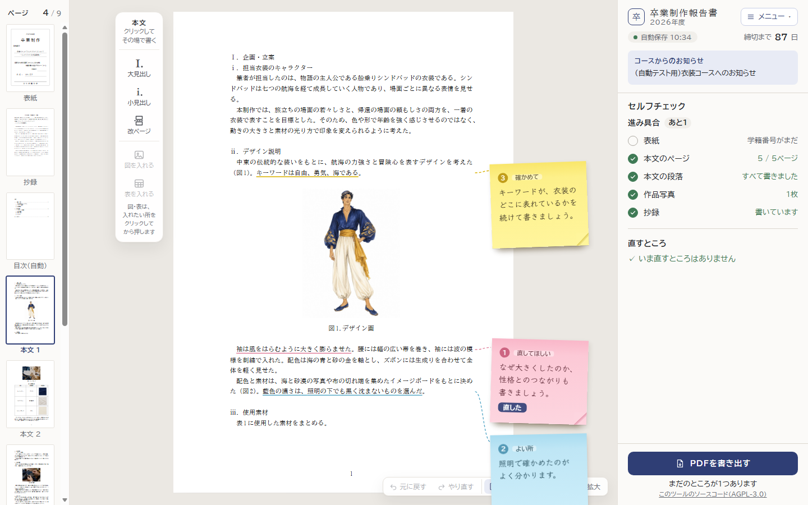
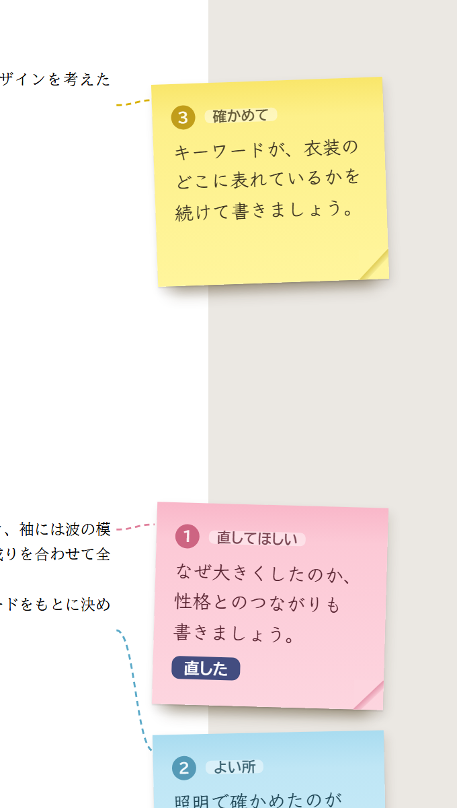

v56 の②（紙面に付箋を貼る）の付箋を、本物の付箋らしくした案です。どれも、付箋は紙面の右の端に貼り、文の下線と点線でつなぎます。字は手書き風（教科書体に近い「Klee One」）。右は付箋のあたりを大きくしたものです。
いちばん見慣れた付箋の形。上が貼り付いていて下がわずかに浮いた影、右下の角が少しめくれています。直した付箋は緑の小さな付箋にたたみます。


本のページの端から出す、細長い透ける付箋。ふだんは短い言葉だけで場所を取らず、押すとメモが開きます。見開き・スマホの「つまみ」と同じ形にそろえられます。


罫線入りのクリーム色のメモ用紙を、マスキングテープで留めた形。手書きのメモらしさがいちばん出ますが、付箋（ふせん）というより「メモ書き」に見えます。


先生が付箋の種類を選んで、色を変えます（直してほしい：ピンク／確かめてほしい：黄／よい所：水色）。よい所も伝えられますが、先生が毎回選ぶ手間が1つ増えます。A・B・C のどれとも組み合わせられます。


どの案でも、付箋は画面だけのもので、PDF には出ません。見開き・スマホでは、場所が足りないので、付箋をページの端の小さなつまみ（B の形）にたたみ、押すと開くようにします。